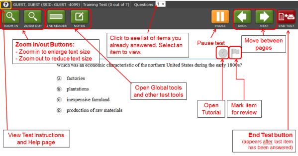

Contents
Overview of the Student Testing Site

The following test tools are available:
- Global Tools: These tools are at the top of the screen in the black banner.
- Stimulus/Question Tools: These tools are for stimuli and questions. To use these tools, you can click on an icon or right-click in the stimulus, question, or answer option areas.
- Physical Science Test Tools: These tools are only for the Physical Science Field Test. They appear in the Global Tools row. (Note: These tools are also available in the high school training test.)
Test Rules
Basic Test Rules
- You cannot skip questions. (You can flag/mark a question for review and go back to it later.)
- You must answer all questions on a page before you can go to the next page. Some pages contain more than one question. You may need to use the scroll bar to see all the questions on a page.
- You may go back to a test question and change your answer (see Pause Rules below).
Pause Rules
- You can pause your test at any time. You will see a warning message that asks you if you are sure you want to pause the test.
- If your test is paused for less than 20 minutes, you can review test questions you already answered.
- If your test is paused for more than 20 minutes, you cannot review test questions you already answered. (If you paused the test on a page where you did not answer test questions, you will go back to that page after you log in.)
- When you log back into your test again, you will see the first page that has a question that you need to answer.
- If you do not do any work in your test for 20 minutes, your test will be paused. You will also be logged out.
- The test saves all your answers right away.
Navigation Rules
- You cannot go to the next page in the test until you answer all questions on the page you are looking at.
- You can go to a test page by clicking the [Back] and [Next] buttons. You can also select a page from the "Questions" list at the top of the screen.